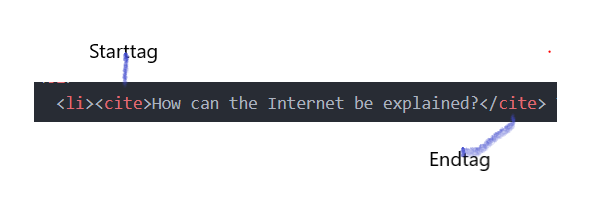

This is a Website about me learning to cope with HTML
On this Webpage, I will tell you about my progress in learning HTML , necessarily connected with Webtechnology- basics and Usability
There are some very important questions about HTML!
What is HTML? HTML stands for Hypertext Markup Language and it allowes Browser to interprete and show files and other content.
What is the so called Landing Page? Also called Home Page, it is the first site reached by an URL. It contains references on other sites on your page or other Websites (e.g.Wikipedia).
How is a HTML-element structured? At least, it consists of a start-tag and an end-tag, sometimes there is also an attribute given. 
Specify at least 5 different HTML-Elements!
head: contains the title of the page (shown only on the Web-Tab) and a link to a css - style - sheet if existing.
body: is the main part of the file and contains header, footer, different sections and at least some text elements.
section: is used to clarify that another passage of text or content begins and ends eg. a paragraph, which has nothing to do with my list below.
ol: stands for ordered list. A list will be created containing e - numeration.
li: stands for list - item and can be used eather in ordered or unordered lists. Signifies where one item of the list starts and ends.
What happens, if I write an HTML-Tag in Upper-Case? Nothing, the tags are case-insensitive.
What are HTML-attributes? attributes consist of a name and a value, added in start-tag. Attributes are global, can be referenced in every part of the HTML file.
What is CSS and why is it used?CSS stands for Cascading Style Sheet and it is used to divide layout and content. It contains for example the background, fontstyle and positioning of elements.
What does the attribute "lang" stand for? Lang stands for language and is defined after ISO Language Codes.
What is the attribute "class" in a HTML file? A HTML- Element can be contained by one or more classes. The class - name can be referenced in a (CSS) Style-Sheet.
Video showing my HTML-Code
HTML and CSS Basics can be supported by fabulous Brad Traversy on Youtube.